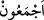

kalmaksızın “hemen secde ettiler.” Şüphesiz birlikte yapılan secde, secde çeşitlerinin
en mükemmelidir. Onun için buradaki secde de böyle bir secde olarak yorumlanmıştır.
Fakir (Bursevî) der ki: Hakîkatte bu secde Âdem (a.s.)’ın aynasında basılı/damgalı
bulunan nûra yapılan bir tâzimdir. Bu nur ise nûr-i muhammedî ve hakîkat-i
ahmediyyedir. Şu ifâdelerinde Hâfız ne güzel söylemiş:
Melek Âdem’e secde ettiğinde yeri öpüp seni niyet eyledi.
Çünkü insanlık mertebesinden ziyâde senin güzelliğinde lütuf buldu.
Bahru’l-ulûm’da der ki: “Âlimler âyetteki “
” kelimesini tefsir usûlü
ıstılahlarından müfessere örnek olduğunu söylerler. Çünkü “
(Melekler hemen
secde ettiler.)” ifâdesinin bütün meleklerin secde ettiği mânâsında olduğu açıktır. Çünkü
(el-melâiketü kelimesi gibi) lâm-i tarifli çoğul kelimelerde asıl olan umûmîliktir. Böyle
kelimeler tıpkı müfredler gibi bütün ferdlerini içine alırlar. Fakat tahsîs ve ferdlerinden
bir kısmının kasdedilmesi ihtimâli vardır. Mesela “
(Melekler
Meryem’e dediler ki)” (Âl-i İmran, 3/45) ifâdesindeki “el-melâiketü (meleklerden)”
maksad Cebrail (a.s.)’dır. Dolayısıyla “küllühüm (hepsi)” lâfzıyla bu ihtimâl ortadan
kalkmış, böylece ifâde öncekinden daha açık bir nass olmuştur. Ancak hâlâ te’vîle ve bu
secdenin dağınık olarak yapıldığı şeklinde yorumlanmaya müsâiddir. İşte “ecmeûn”
lâfzı ile bu ihtimâlin tamâmen ortadan kalkmasıyla bu lafız “müfesser” hâle gelmiştir.
Şâyed: “Fakat İblis bu hükümden müstesnâ tutulduğu için ifâdede hâlâ tahsis edilme
ihtimâli vardır” diyecek olursan derim ki: İstisnâ, tahsîs değildir.
31. Fakat İblis hariç! O, secde edenlerle berâber olmaktan kaçındı.
“Fakat İblis hâriç” “
Eblese” ümîdini kesti ve şaşkınlığa düştü anlamındadır.
İblis kelimesi de ondan türemiştir. Ya da bu kelime, Arapça olmayan bir kelimedir.
İkinci ihtimâle göre İblis kelimesinde iştikak söz konusu değildir. Cumhûra göre daha
doğru olan da budur.
Bu ifâdedeki istisnâ, muttasıl bir istisnâdır (istisnâ edilenle, kendisinden istisnâ
edilenler aynı cinstendir.) Çünkü istisnâlarda aslolan bu istisnâ türüdür. İblis melekler
içinde gizli, tek başına yaşayan bir cinnî olduğundan meleklerle birlikte ona da secde
etme emri verildi. Bu bakımdan ‘melekler secde etti’ ifâdesinde erkeğin dişiye tağlîbi
gibi melekler İblis’e tağlîb edildi. Sonra da İblis meleklerden biriymiş gibi istisnâ
edildi.
İbn Abbas (r.anhümâ)’dan rivâyet edildiğine göre Allah meleklerden bir topluluğa: